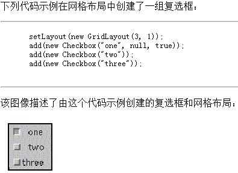
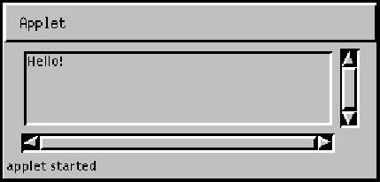
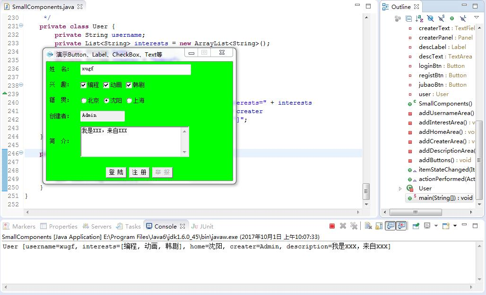

第五十一节 Button （按钮）、Label （标签）、Checkbox （复选框） 和 文本域组件
一、Button （按钮）
java.awt;
public class Button extends Component implements Accessible {}
创建一个标签按钮。当按下该按钮时，应用程序能执行某项动作。
构造方法
public Button(String label) throws HeadlessException
构造一个带指定标签的按钮。
主要方法
public void addActionListener(ActionListener l) 添加指定动作侦听器，以接收发自此按钮的动作事件。 public void removeActionListener(ActionListener l) 移除指定动作侦听器，不再接收发自此按钮的动作事件。 public void setActionCommand(String command) 设置此按钮激发的动作事件的命令名称。 public void setLabel(String label) 设置标签。
二、Label （标签）
java.awt;
public class Label extends Component implements Accessible {}
一个可在容器中放置文本的组件。
一个标签只显示一行只读文本。
文本可由应用程序更改，但是用户不能编辑。
字段
public static final int CENTER 指示标签文本居中。 public static final int LEFT 指示标签文本左对齐。 public static final int RIGHT 指示标签文本右对齐。
构造方法
public Label(String text, int alignment) throws HeadlessException 构造一个显示指定文本字符串的新标签，以指定方式对齐文字，可能的alignment值有Label.LEFT、Label.RIGHT和Label.CENTER。 public Label(String text) throws HeadlessException 使用指定字符串构造一个新的标签，文字左对齐。
主要方法
public void setAlignment(int alignment) 设置标签的文字对齐方式，可能的值有Label.LEFT、Label.RIGHT和Label.CENTER。 public void setText(String text) 设置标签显示的文本。
三、Checkbox （复选框）
java.awt;
public class Checkbox extends Component implements ItemSelectable, Accessible {}
复选框是一个可处于“开”(true) 或“关”(false) 状态的图形组件。
单击复选框可将其状态从“开”更改为“关”，或从“关”更改为“开”。

构造方法
public Checkbox(String label) throws HeadlessException 使用指定标签创建一个复选框，状态为“关”，并且不属于任何复选框组。 public Checkbox(String label, boolean state) throws HeadlessException 使用指定标签创建一个复选框，state为指定状态，不属于任何复选框组。 public Checkbox(String label, boolean state, CheckboxGroup group) throws HeadlessException 构造具有指定标签的复选框，state为指定状态，处于指定复选框组中。
主要方法
public void addItemListener(ItemListener l) 添加指定项侦听器，以接收来自此复选框的项事件。 public void removeItemListener(ItemListener l) 移除项侦听器，这样项侦听器将不再接收发自此复选框的项事件。 public void setState(boolean state) 设置状态。 public boolean getState() 确定此复选框是处于“开”状态，还是处于“关”状态。 true指示复选框处于“开”状态，false指示复选框处于“关”状态。 public void setCheckboxGroup(CheckboxGroup g) 为复选框指定复选框组。 如果复选框已经在另一个复选框组中，则首先从这个复选框组中提取该复选框。 public void setLabel(String label) 设置文字便签。
四、文本域组件
1、 文本框 （TextField）
java.awt;
public class TextField extends TextComponent {}
允许编辑的单行文本组件。
构造方法
public TextField(String text, int columns) throws HeadlessException
构造显示指定文本的新TextField。
宽度足够容纳指定列数。列是近似平均字符宽度，与平台有关。
主要方法
public void setColumns(int columns) 设置此TextField的列数。 public int getColumns() 获取此TextField的列数。 public void addActionListener(ActionListener l) 添加指定操作侦听器，以从此TextField接收操作事件。 public void removeActionListener(ActionListener l) 移除指定操作侦听器，不再从此TextField接收操作事件。 public void addTextListener(TextListener l) 添加指定文本事件侦听器，以接收此TextField发出的文本事件。 public void removeTextListener(TextListener l) 移除指定文本事件侦听器，不再接收此TextField发出的文本事件。 public void setBackground(Color c) 设置此TextField背景色。 public Color getBackground() 获得此TextField背景色。 public void setCaretPosition(int position) 设置文本插入符位置。 public int getCaretPosition() 返回文本插入符位置。 public String getSelectedText() 返回TextField所表示文本的选定文本。 public void setText(String t) 设置显示文本。 public String getText() 返回TextField表示的文本。 默认情况下，是一个空字符串。 public void setEditable(boolean b) 设置是否可编辑。 public boolean isEditable() 返回TextField可编辑状态。 public void selectAll() 选择TextField中的所有文本。
2、 文本域 （TextArea）
java.awt;
public class TextArea extends TextComponent {}
多行文本区域。
可以设置为可编辑或只读。
下图显示了文本区的外观：

字段
public static final int SCROLLBARS_BOTH 创建并显示垂直和水平滚动条。 public static final int SCROLLBARS_HORIZONTAL_ONLY 只创建并显示水平滚动条。 public static final int SCROLLBARS_VERTICAL_ONLY 只创建并显示垂直滚动条。 public static final int SCROLLBARS_NONE 不为文本区创建或显示任何滚动条。
构造方法
public TextArea(int rows, int columns) throws HeadlessException 构造一个新文本域，具有指定的行数和列数，内容为空字符串。 public TextArea(String text, int rows, int columns) throws HeadlessException 构造一个新文本域，具有指定文本、行数和列数。 public TextArea(String text, int rows, int columns, int scrollbars) throws HeadlessException 构造一个新文本域，具有指定文本、行数、列数和滚动条可见性。
主要方法
public void append(String str) 将给定文本追加到文本域。 public void setColumns(int columns) 设置文本域的列数。 public int getColumns() 返回文本域的列数。 public void setRows(int rows) 设置文本域的行数。 public int getRows() 返回文本域的行数。 public void insert(String str, int pos) 在文本域的指定位置插入指定文本。 public void replaceRange(String str, int start, int end) 用指定文本替换开始位置与结束位置之间的文本。
五、演示程序
public class SmallComponents implements ItemListener, ActionListener {
// 创建主窗体
private FrameStart frameStart = new FrameStart(
"演示Button、Label、CheckBox、Text等");
// 窗体上的三个区域
// 摆放姓名、兴趣、籍贯、创建者组件
private Panel northPanel = new Panel(new GridLayout(4, 1));
// 摆放简介组件
private Panel centerPanel = new Panel(new FlowLayout(FlowLayout.LEFT));
// 摆放登陆、注册、举报组件
private Panel southPanel = new Panel(new FlowLayout(FlowLayout.CENTER));
// 姓名组件
private Label nameLabel = new Label("姓 名：");
private TextField nameText = new TextField(30);
private Panel namePanel = new Panel(new FlowLayout(FlowLayout.LEFT));
// 兴趣组件
// 使用复选框实现
private Label interestLabel = new Label("兴 趣：");
private Checkbox box1 = new Checkbox("编程");
private Checkbox box2 = new Checkbox("动画");
private Checkbox box3 = new Checkbox("韩剧");
private Panel interestPanel = new Panel(new FlowLayout(FlowLayout.LEFT));
// 籍贯组件
// 使用单选框实现
private Label homeLabel = new Label("籍 贯：");
private Checkbox box4 = new Checkbox("北京");
private Checkbox box5 = new Checkbox("沈阳");
private Checkbox box6 = new Checkbox("上海");
private Panel homePanel = new Panel(new FlowLayout(FlowLayout.LEFT));
private CheckboxGroup group = new CheckboxGroup();
// 创建者组件
private Label createrLabel = new Label("创建者：");
private TextField createrText = new TextField(10);
private Panel createrPanel = new Panel(new FlowLayout(FlowLayout.LEFT));
// 自我描述组件
// 使用文本域实现
private Label descLabel = new Label("简 介：");
private TextArea descText = new TextArea(3, 30);
// 登陆组件
private Button loginBtn = new Button("登 陆");
private Button registBtn = new Button("注 册");
private Button jubaoBtn = new Button("举 报");
// 保存一个User对象
private User user = new User();
public SmallComponents() {
// 设置窗体布局管理器、大小
this.frameStart.setLayout(new BorderLayout());
this.frameStart.setSize(400, 280);
this.addUsernameArea();
this.addInterestArea();
this.addHomeArea();
this.addCreaterArea();
this.frameStart.add(this.northPanel, BorderLayout.NORTH);
this.addDescriptionArea();
this.frameStart.add(this.centerPanel, BorderLayout.CENTER);
this.addButtons();
this.frameStart.add(this.southPanel, BorderLayout.SOUTH);
this.frameStart.validate();
}
/**
* 设置姓名组件
*/
private void addUsernameArea() {
this.namePanel.add(this.nameLabel);
this.namePanel.add(this.nameText);
this.northPanel.add(this.namePanel);
}
/**
* 设置兴趣组件
*/
private void addInterestArea() {
// 设置选择、取消监听器
this.box1.addItemListener(this);
this.box2.addItemListener(this);
this.box3.addItemListener(this);
this.interestPanel.add(this.interestLabel);
this.interestPanel.add(this.box1);
this.interestPanel.add(this.box2);
this.interestPanel.add(this.box3);
this.northPanel.add(this.interestPanel);
}
/**
* 设置籍贯组件
*/
private void addHomeArea() {
// 设置选择、取消监听器
this.box4.addItemListener(this);
this.box5.addItemListener(this);
this.box6.addItemListener(this);
this.box4.setCheckboxGroup(this.group);
this.box5.setCheckboxGroup(this.group);
this.box6.setCheckboxGroup(this.group);
this.homePanel.add(this.homeLabel);
this.homePanel.add(this.box4);
this.homePanel.add(this.box5);
this.homePanel.add(this.box6);
this.northPanel.add(this.homePanel);
}
/**
* 设置创建者组件
*/
private void addCreaterArea() {
this.createrText.setText("Admin");
// 设置只读
this.createrText.setEditable(false);
this.createrPanel.add(this.createrLabel);
this.createrPanel.add(this.createrText);
this.northPanel.add(this.createrPanel);
}
/**
* 设置自我描述组件
*/
private void addDescriptionArea() {
this.centerPanel.add(this.descLabel);
this.centerPanel.add(this.descText);
}
/**
* 设置按钮组件
*/
private void addButtons() {
// 设置禁用
this.jubaoBtn.setEnabled(false);
this.loginBtn.addActionListener(this);
this.southPanel.add(this.loginBtn);
this.southPanel.add(this.registBtn);
this.southPanel.add(this.jubaoBtn);
}
/**
* 复选框状态监听器实现方法
*/
@Override
public void itemStateChanged(ItemEvent e) {
// 获取事件源
Checkbox box = (Checkbox) e.getSource();
// 获取文字
String l = box.getLabel();
// 获取复选框对象所属的组
CheckboxGroup g = box.getCheckboxGroup();
if (g == null) {
if (e.getStateChange() == ItemEvent.SELECTED)
this.user.interests.add(l);
else
this.user.interests.remove(l);
} else {
if (e.getStateChange() == ItemEvent.SELECTED)
this.user.home = l;
}
}
/**
* 登陆按钮点击方法
*/
@Override
public void actionPerformed(ActionEvent e) {
// 获取用户名、自我简介文字
String username = this.nameText.getText();
String description = this.descText.getText();
// 为USer对象属性赋值
this.user.username = username;
this.user.description = description;
System.out.println(this.user);
}
/**
* 保存用户信息，包括：用户名、兴趣、籍贯、创建者、简介等
*
* @author soft01
*
*/
private class User {
private String username;
private List<String> interests = new ArrayList<String>();
private String home;
private String creater = "Admin";
private String description;
@Override
public String toString() {
return "User [username=" + username + ", interests=" + interests
+ ", home=" + home + ", creater=" + creater
+ ", description=" + description + "]";
}
}
public static void main(String[] args) {
// SmallComponents sm = new SmallComponents();
new SmallComponents();
}
}
运行程序可以显示窗口

第五十节 Menu （菜单）
第五十二节 事件和监听器
加入 QQ 群：5ijy网站开发交流
 ，获取更多源代码和开发环境配置信息。
，获取更多源代码和开发环境配置信息。